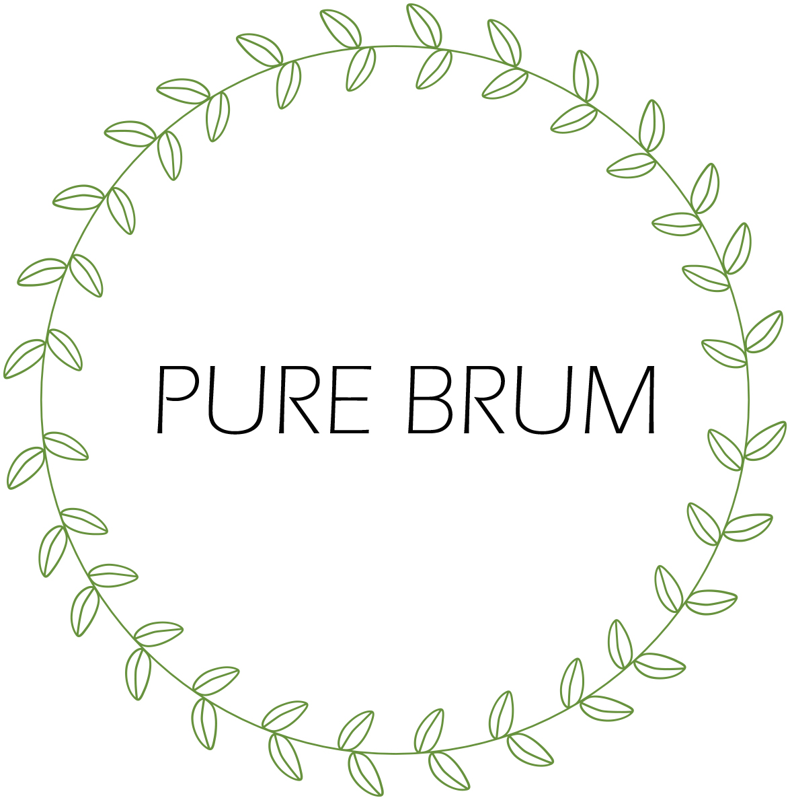

Shop
• Cow – Cow Vintage is the best way to find big brands and one off reworked pieces that will allow you to fill your wardrobe in a sustainable way. Based down in Digbeth, you can miss the big yellow warehouse.
• The Clean Kilo – Birmingham is lucky enough to have the largest zero-waste supermarket in the UK. Clean Kilo sell plastic-free products that are sources locally in order to reduce waste. They sell everything you would find in any ordinary supermarket including dry food, household products and toiletries as well as fresh fruit, veg, juice and plant milk.
• Honest Skincare – An independent, organic skincare brand with two stores in Birmingham. They use 100% natural ingredients and all of their packaging is biodegradable or reusable. They also never test on animals and create minimal waste during their production process.
• Indigo Wholefoods (Moseley) - Indigo Wholefoods sells a whole host of different things ot make your vegan life easier. Organic and fair trade vegan food, chemical free beauty products, nontoxic cleaning products, nutritional supplements and alternative remedies. Indigo Wholefoods is a business built on ethics and principles who are committed to making a difference for the planet.